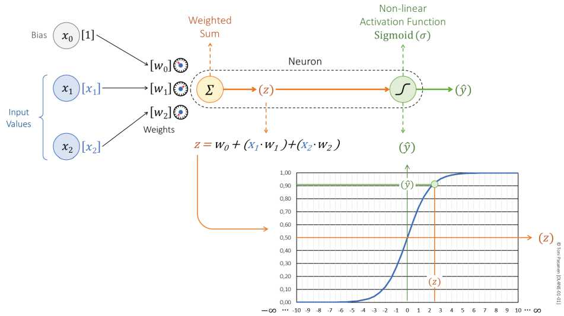
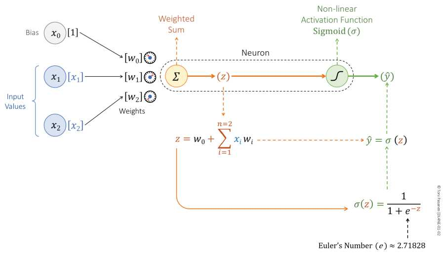

第2天 / 28第1周 · 深度学习入门 约55分钟
人工神经元：加权求和与偏置
📖 对应 Ch1 Artificial Neuron（上）
加权求和
20分钟
偏置项
15分钟
原图精读
10分钟
测验
10分钟
🎯 今日目标
- 写出 z = w0 + x1·w1 + x2·w2 并解释每项
- 理解权重 w 是“旋钮”，偏置 w0 是“起点”
- 看懂原书神经元结构图
进度自动保存在本机
📖 细节讲解
1. 神经元 = Σ求和器 + 非线性
输入 x1、x2（比如两张流量特征：带宽利用率、队列深度），各自乘权重 w1、w2，再加偏置 w0，得到 z。公式：z = w0 + x1·w1 + x2·w2。权重决定“这个输入有多重要”，训练就是不断拧这些旋钮，让输出 ŷ 越来越接近真实值 y。
2. 偏置 Bias：为什么需要 w0？
没有偏置，直线必过原点，模型很笨。有了 w0（对应输入恒为 1 的 x0），模型可以整体平移。类比交换机 QoS：权重是各队列的权重，偏置是全局的阈值偏移。书中 p43-44 专门讲 bias term，这是新手最容易忽略却最重要的参数。
3. 结合原图读数
看本页第一张原图：左侧 x0/x1/x2 进入，中间 Σ 算出 z，右侧 Sigmoid 压到 0-1 输出 ŷ，下方曲线显示 z→ŷ 的映射。记住颜色：橙色是 z 路径，绿色是 ŷ 路径。考试常考：z 是加权和，ŷ 是激活后输出。
🖼️ 原书图解 + 解读（点击放大）

🔍 神经元全景：x→[w]→Σ→z→Sigmoid→ŷ。注意 z = w0+(x1·w1)+(x2·w2)。
📖 原图 · Ch1 p40 · 点击放大
🔍 加权求和细节：每个输入都有独立权重旋钮，训练即调 w。
📖 原图 · Ch1 p42 · 点击放大🌐 网络工程师视角：把 w1/w2 想成 ECMP 两条链路权重，w0 想成基准 metric。调权重即调流量比，调偏置即调整体偏移。
✅ 课后强化（点选项即判分）
第1题 · z 的正确公式是？
💡 解析：偏置 + 每个输入×权重之和。（答案 A）
第2题 · 权重 w 的作用是？
💡 解析：训练本质就是调 w 和 bias。（答案 A）
第3题 · 偏置 w0 对应输入是？
💡 解析：x0=1，所以 w0 直接相加，起平移作用。（答案 A）
第4题 · Σ 符号代表？
💡 解析：加权求和。（答案 A）
第5题 · 没有偏置的模型缺点是？
💡 解析：少了平移自由度。（答案 A）
✍️ 动手任务
手算一次：x1=0.5,w1=0.4,x2=0.8,w2=0.6,w0=0.1，求 z。